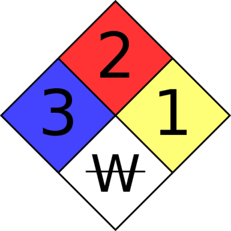

Laboratory Safety
Important terms/concepts
- MSDS
- PPE (personal protective equipment)
- Fire Diamond
- Reagent
- Aliquot
- Stock Solution
- EH&S (Environmental Health and Safety)
- Safety first - 'guilty until proven innocent'
Some Questions
- What is the most important safety issue in the lab?
- What are some common safety mistakes in the lab?
- Why is food not permitted in the lab?
- What should you do if someone else is being unsafe in the lab?
Understanding Safety in the lab
One of the most important responsibilities in the lab is to conduct experiments safely. We owe it to ourselves and our colleagues to be sure that our experiments are conducted in a way that does not engager health. Importantly for our course we will not be working with chemicals, materials, or techniques that pose any significant threats. Nevertheless, 'sola dosis facit venenum'. We may at times work with open flames and sharp objects. It is important that every student make themselves familiar with possible safety risks and hazards. You may one day work in a laboratory (especially when doing independent research) where there are chemicals or instruments that do pose risks (even at school there are items in our storage that may be dangerous if mishandled). You must take responsibility, because you may not always be informed by others. To help us know how to understand these dangers we will consider the MSDS and Fire Diamond.
Basic safety rules
- Safety is everyone's responsibility - you are responsible for keeping safe and for speaking up if you see something unsafe.
- Know what PPE is required and when and review MSDS for unfamiliar materials.
- No food or drink in any laboratory settings.
- Never walk away from an open flame.
- Ask for help when you are uncertain.
SDS/MSDS and Fire Safety
All chemicals in the laboratory have a Material Safety Data Sheet (MSDS) (also called a Safety Data Sheet) associated with them. This document explains the potential safety risks associated with the chemical and what to do if you are exposed to the chemical. You can search "chemical name" + "safety data sheet" to find this information online if you don't know where this information is in the lab. You can also use a website such as chemicalsafety.com.
Fire safety
Even if we don't work with flammable chemicals, it's important to know some rules.

The colors on the fire diamond all represent different things
- Red: flammability
- Blue: health
- Yellow: reactivity (with other chemicals)
- White: special notice
Warning
NEVER WEAR GLOVES WHEN WORKING WITH OPEN FLAMES. Tie back hair and loose clothing as well.
Laboratory attire
Recommendations from Proper Laboratory Clothing
While in the laboratory you should have the following:
- Approved safety goggles
- A shirt that covers the stomach and lower back as well as the upper arms
- Long pants (an acceptable, but not recommended, alternative is to wear shorts, a skirt, or a lab coat such that your knees are covered when you are sitting down.)
- Shoes that completely cover the foot
Avoid wearing the following items to lab:
- Contact lenses
- Tank tops or cropped shirts
- Mesh shirts
- Shorts or skirts that do not cover your knees when you are sitting
- Sandles, flip-flops, or other shoes that do not completely cover your feet; sandles with socks are not considered appropriate attire
Links
These links are very, very detailed. You can have a look but there is more information here than what we will use in class. These may be useful however for summer research experiences or your future college studies.